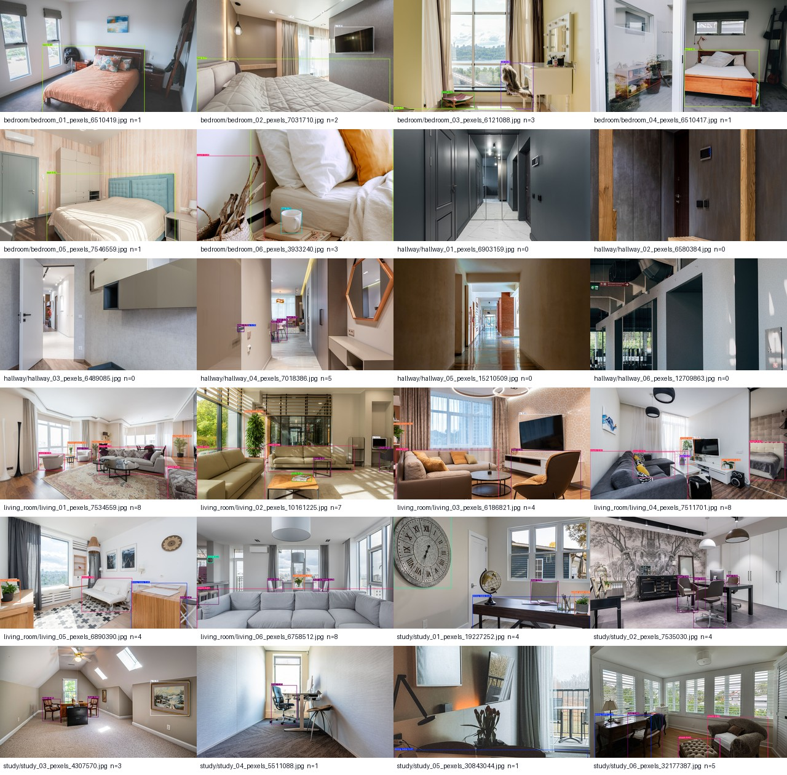
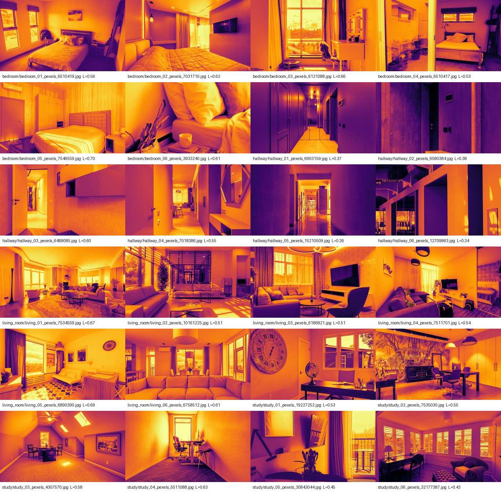
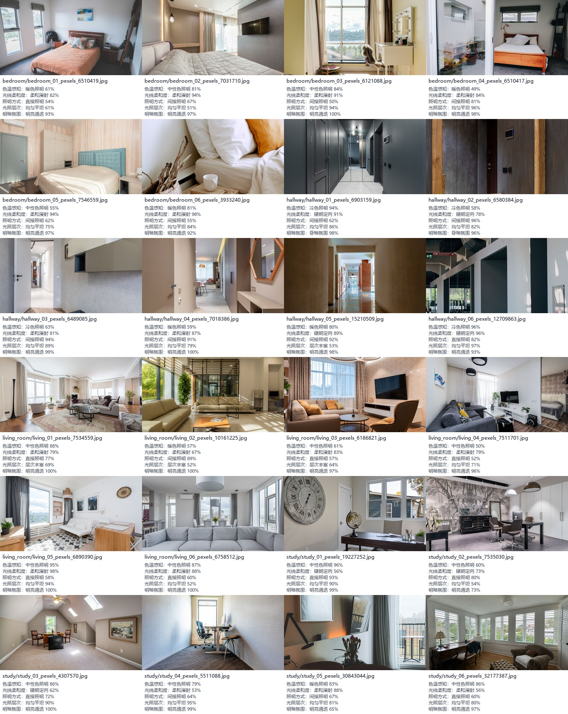
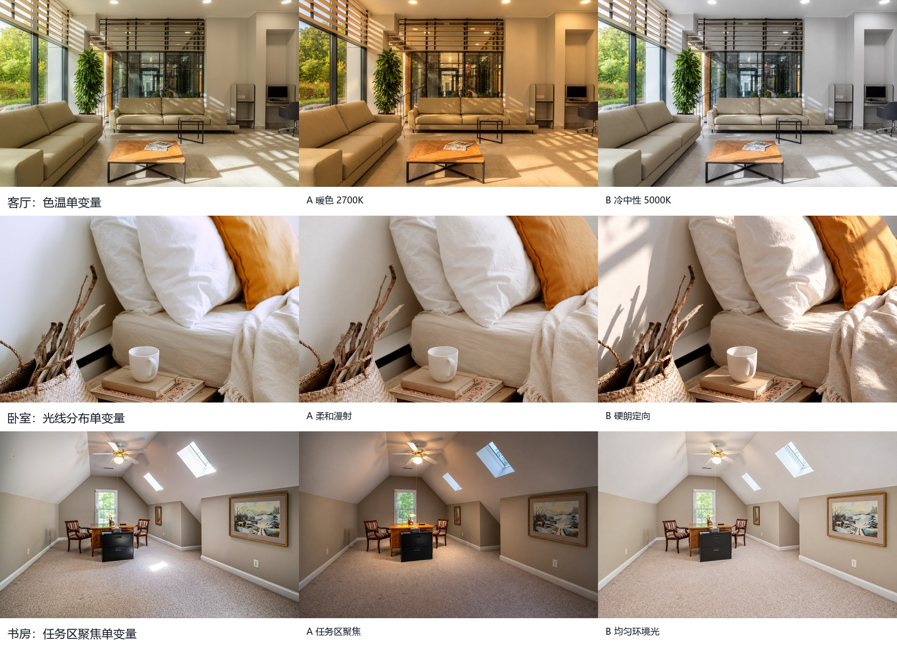

01
场景触点优先级
按当前口径的样本量排序
UGC × KANO-INSPIRED × VISION
保留现有记录级成果，并以帖子级稳健性分析校验结论。所有图表直接读取已验证输出，不在浏览器中重算研究数据。
基于 UGC 情感分布的需求优先级启发式分析，不等同于经典 Kano 正反问卷。
按当前口径的样本量排序
正向 / 中性 / 负向
ROBUSTNESS AUDIT
Legacy 以抽取记录为单位，v2 先在帖子内去重与冲突投票。变化本身不是错误，而是提醒我们避免让长帖子获得过高权重。
仅显示发生变化的组合
| 场景 | 指标 | Legacy | v2 | 稳定率 |
|---|
Bootstrap 分类稳定率
VISUAL BASELINES
YOLO 描述室内物体，像素统计描述光照，OpenCLIP 描述零样本美学属性。三者都是 baseline，各自有明确适用边界。
COCO 预训练类别，不包含吊灯、灯带等灯具细分类。

亮暗比例、局部对比度、空间层次与暖色代理指标。

属性分数是提示词间的相似度，不是人工标签真值。

CONTROLLED GENERATION
三组原图 / A / B 对照：只调整色温、光线分布或任务区聚焦，并用光照指标与 OpenCLIP 回验。
